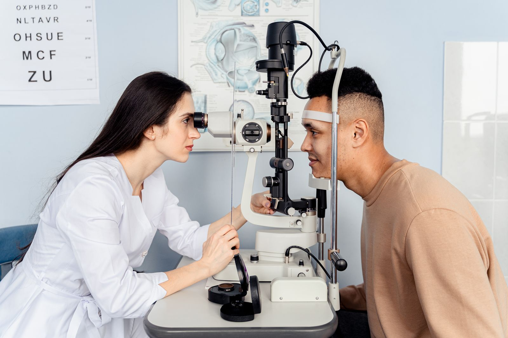

Consultation générale
Mesure de la vue, examen de l'œil, ordonnance de lunettes ou de lentilles.
Un rendez-vous chez l'ophtalmo en quelques semaines, pas en six mois.
Grâce au travail en équipe avec nos orthoptistes, nous proposons un rendez-vous sous quatre semaines pour la plupart des motifs. Consultations adultes et enfants, renouvellement de lunettes, suivi du glaucome et du diabète.
Œil rouge et douloureux, baisse de vue brutale : appelez directement.

Cliquez sur votre situation : le motif de rendez-vous se remplit tout seul.
Nos consultations
Mesure de la vue, examen de l'œil, ordonnance de lunettes ou de lentilles.
Dépistage des troubles visuels, strabisme, rééducation orthoptique.
Mesure de la pression de l'œil, champ visuel, OCT, suivi au long cours.
Fond d'œil de dépistage, suivi de la rétinopathie diabétique.
Diagnostic et orientation vers la chirurgie quand elle devient utile.
Œil rouge, douleur, corps étranger, baisse de vue soudaine : créneaux quotidiens.
Votre rendez-vous
Téléphone ou formulaire, avec le motif.
Mesures de la vue et examens préparatoires par l'orthoptiste.
L'ophtalmologiste examine vos yeux et vous explique.
Lunettes, traitement, et prochain rendez-vous si besoin.
Au quotidien
Enfant de 4 ans
Patient de 58 ans
Patiente de 45 ans
Nos engagements
Dr François Leroux, ophtalmologiste
« Rendez-vous obtenu en trois semaines alors qu'on m'annonçait six mois ailleurs. Consultation sérieuse et bien expliquée. »
« Mon fils avait un strabisme. Prise en charge rapide et très douce avec les enfants. »
Questions fréquentes
Votre question n'est pas là ?
Appelez-nous au 02 61 91 47 60.
En moyenne moins de quatre semaines pour un premier rendez-vous, et des créneaux chaque jour pour les urgences.
L'orthoptiste réalise les mesures et examens préparatoires. L'ophtalmologiste peut ainsi se concentrer sur le diagnostic, ce qui permet de recevoir plus de patients.
Œil rouge et douloureux, baisse brutale de la vue, éclairs lumineux ou voile devant l'œil, choc ou produit dans l'œil : appelez immédiatement, ou le 15 en dehors de nos horaires.
Des examens sont recommandés dans la petite enfance et avant l'entrée à l'école, et à tout âge si l'enfant plisse les yeux, louche ou se plaint de maux de tête.
Un dépistage régulier de la rétinopathie diabétique est recommandé, en général tous les ans ou tous les deux ans selon votre situation. Nous planifions ce suivi.
Non, nos ophtalmologistes sont conventionnés en secteur 1 et appliquent les tarifs de l'Assurance maladie.
Rendez-vous
Indiquez le motif. Nous vous rappelons pour vous proposer un créneau.
Du lundi au vendredi, 8 h 30 à 18 h 30
22 rue Jeanne-d'Arc, 76000 Rouen
Patients venant de Rouen, Mont-Saint-Aignan, Bois-Guillaume, Sotteville-lès-Rouen, Le Grand-Quevilly, Bihorel, Darnétal.